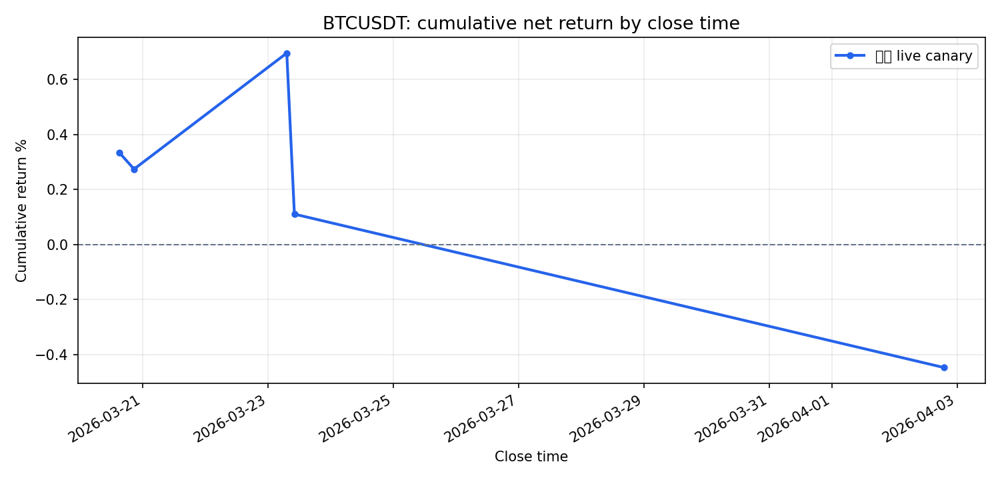
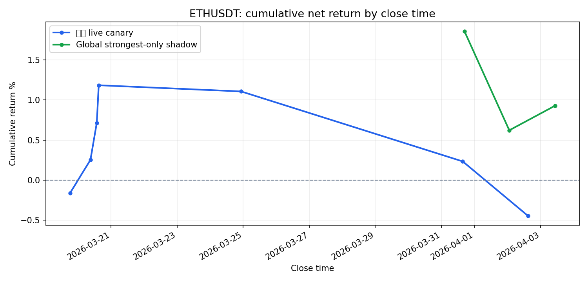
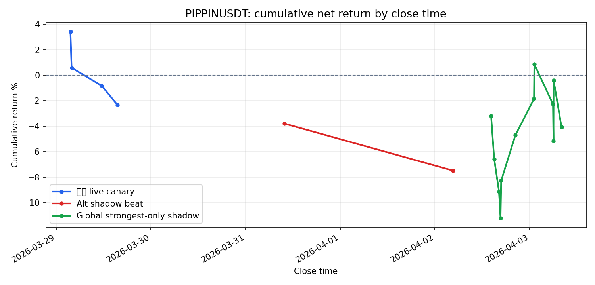
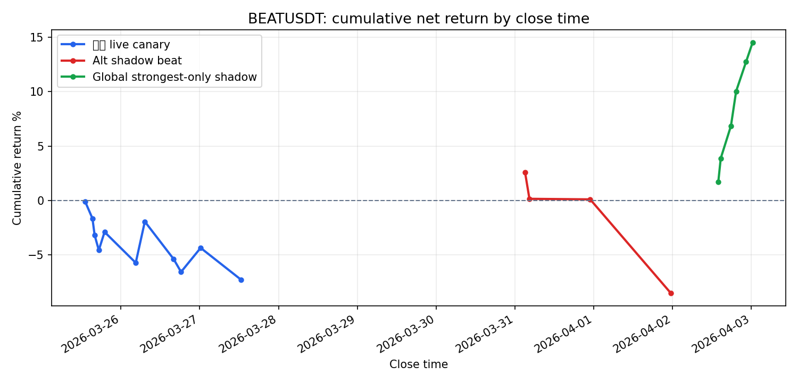

preview_unclosed_15m 模式用未收盘 15m K 线价格估算小时级 EMA，等效提前约 45 分钟预知未来；(2) 回测脚本 warmup 窗口膨胀，导致长期回测结果被撤回作废（见 INVALIDATED_BY_WARMUP_AUDIT_2026-04-07.md）；(3) 实盘 vs 模拟 close match rate 仅 11.8%，去除 preview 后所有时间窗口 live-like 回测均为负收益。这页不是“吹收益”，而是专门回答一个很实际的问题：32b 最近亏，到底是策略整体失效，还是少数币在拖后腿？
口径说明：
live canary = 当前 rank32b 实盘 recent closed tradesshadow beat = Alt shadow sidecar（更偏小币/alt）shadow global = Global strongest-only shadow（全池最强 1 个）如果某条线样本笔数太少，Sharpe 会直接隐藏；重点还是看累计收益曲线是不是一路向下。
BTC/ETH 并没有表现出‘特别能赚钱’，但至少从这段样本看，它们不像 BEAT/PIPPIN 那样是主要亏损黑洞。

| 数据口径 | 笔数 | 胜率 | 累计收益 | 单笔均值 | Trade Sharpe | 样本区间 |
|---|---|---|---|---|---|---|
| 实盘 live canary | 5 | 40.00% | -0.45% | -0.09% | -0.466 | 2026-03-20 14:54 UTC → 2026-04-02 18:53 UTC |
BTC/ETH 并没有表现出‘特别能赚钱’，但至少从这段样本看，它们不像 BEAT/PIPPIN 那样是主要亏损黑洞。

| 数据口径 | 笔数 | 胜率 | 累计收益 | 单笔均值 | Trade Sharpe | 样本区间 |
|---|---|---|---|---|---|---|
| 实盘 live canary | 7 | 42.86% | -0.45% | -0.06% | -0.325 | 2026-03-19 18:18 UTC → 2026-04-02 14:57 UTC |
| Global strongest-only shadow | 3 | 66.67% | 0.93% | 0.32% | — | 2026-03-31 16:43 UTC → 2026-04-03 10:28 UTC |
PIPPIN 在 live 和 shadow 两边都偏弱，不像只是执行滑点问题，更像信号本身在这个名字上噪音偏大。

| 数据口径 | 笔数 | 胜率 | 累计收益 | 单笔均值 | Trade Sharpe | 样本区间 |
|---|---|---|---|---|---|---|
| 实盘 live canary | 4 | 25.00% | -2.33% | -0.56% | — | 2026-03-29 03:36 UTC → 2026-03-29 15:32 UTC |
| Alt shadow beat | 2 | 0.00% | -7.48% | -3.82% | — | 2026-03-31 09:50 UTC → 2026-04-02 04:33 UTC |
| Global strongest-only shadow | 12 | 41.67% | -4.07% | -0.29% | -0.300 | 2026-04-02 14:14 UTC → 2026-04-03 08:05 UTC |
这段样本里，BEAT 在 live canary 亏损最重；如果你主观体感是‘32b 最近一直在抽脸’，这个币确实是高嫌疑拖累项。

| 数据口径 | 笔数 | 胜率 | 累计收益 | 单笔均值 | Trade Sharpe | 样本区间 |
|---|---|---|---|---|---|---|
| 实盘 live canary | 11 | 27.27% | -7.31% | -0.66% | -0.946 | 2026-03-25 13:03 UTC → 2026-03-27 12:33 UTC |
| Alt shadow beat | 4 | 25.00% | -8.56% | -2.12% | — | 2026-03-31 03:05 UTC → 2026-04-01 23:30 UTC |
| Global strongest-only shadow | 6 | 100.00% | 14.55% | 2.29% | 10.464 | 2026-04-02 13:56 UTC → 2026-04-03 00:24 UTC |